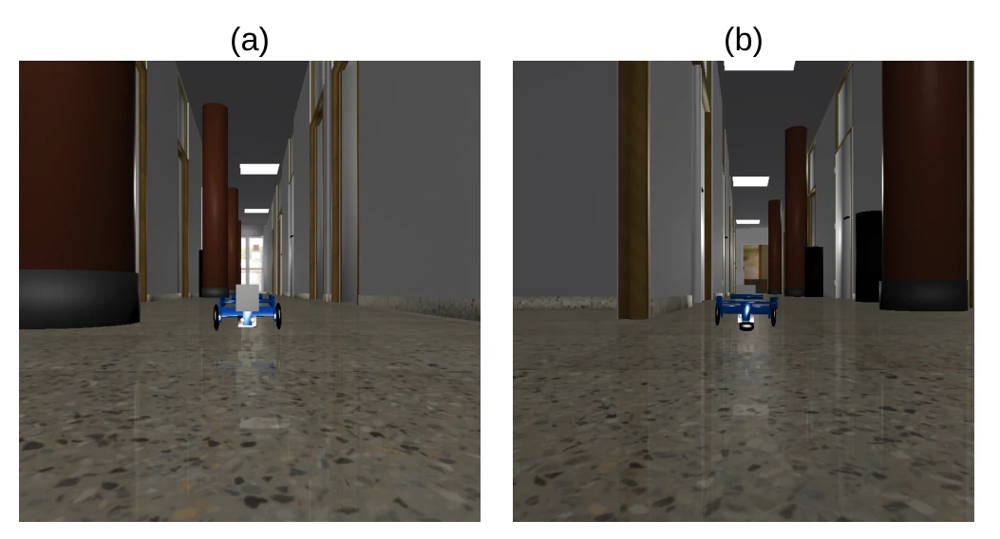
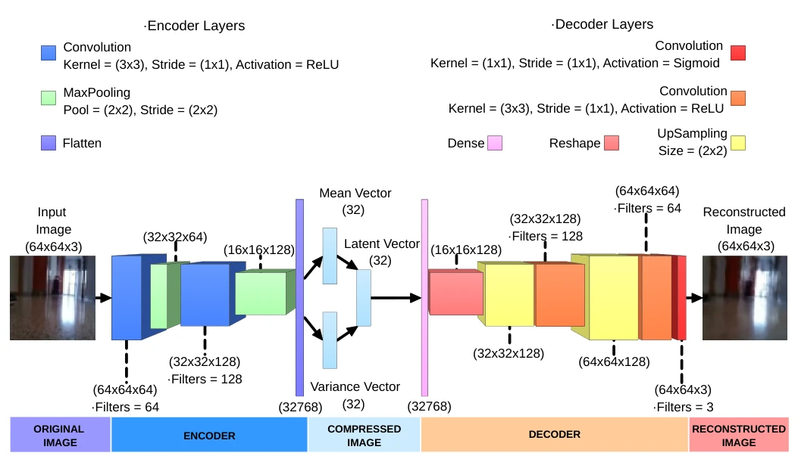
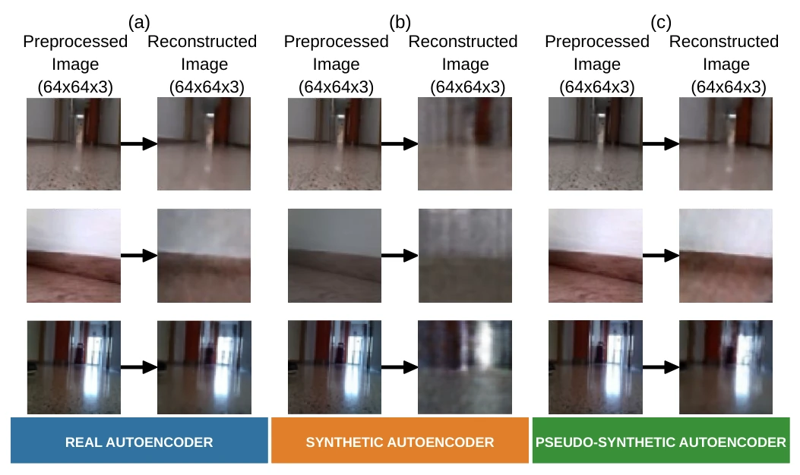
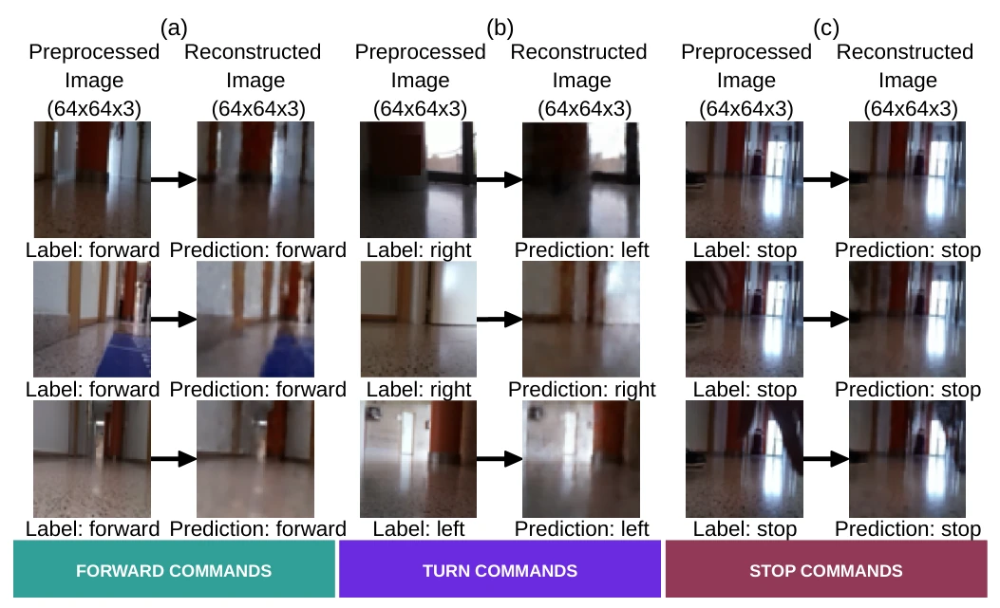
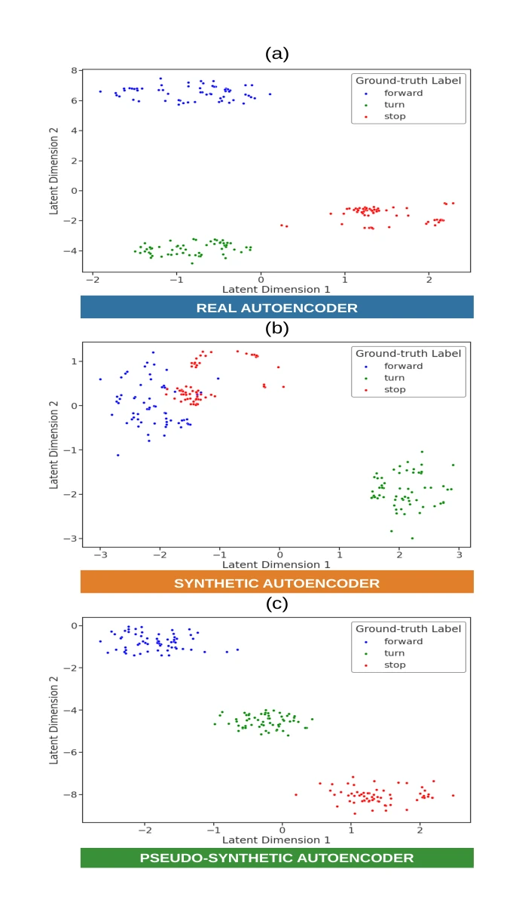
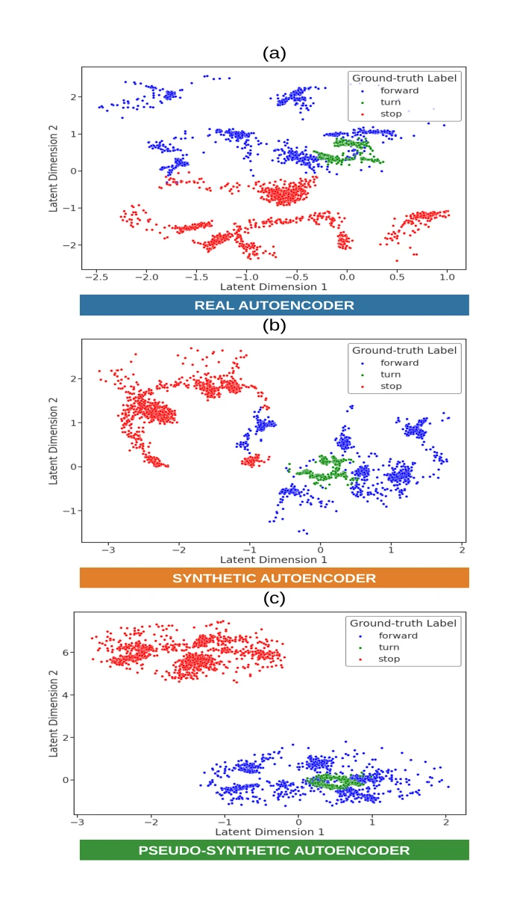
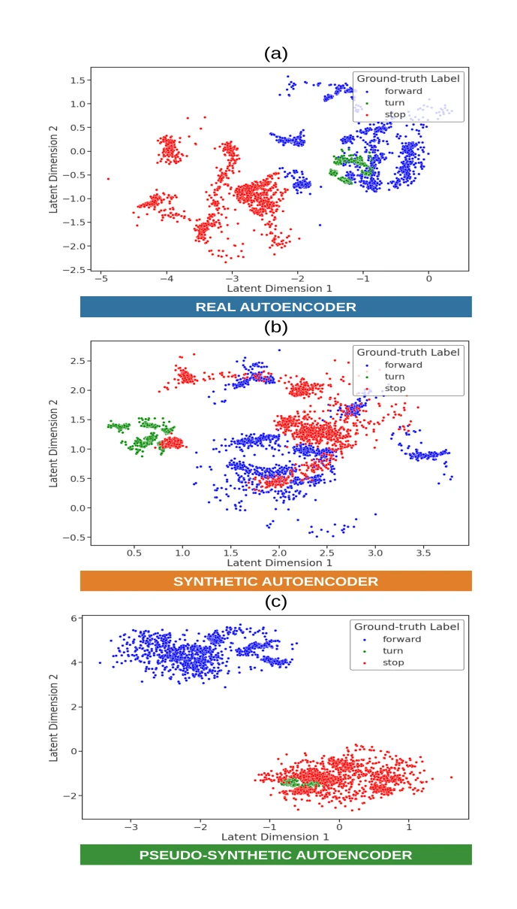
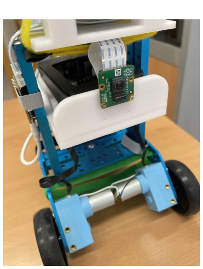
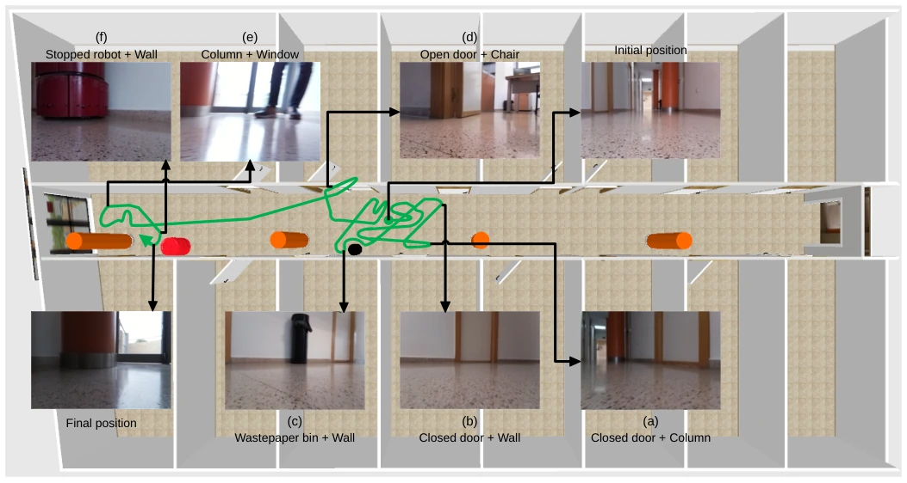
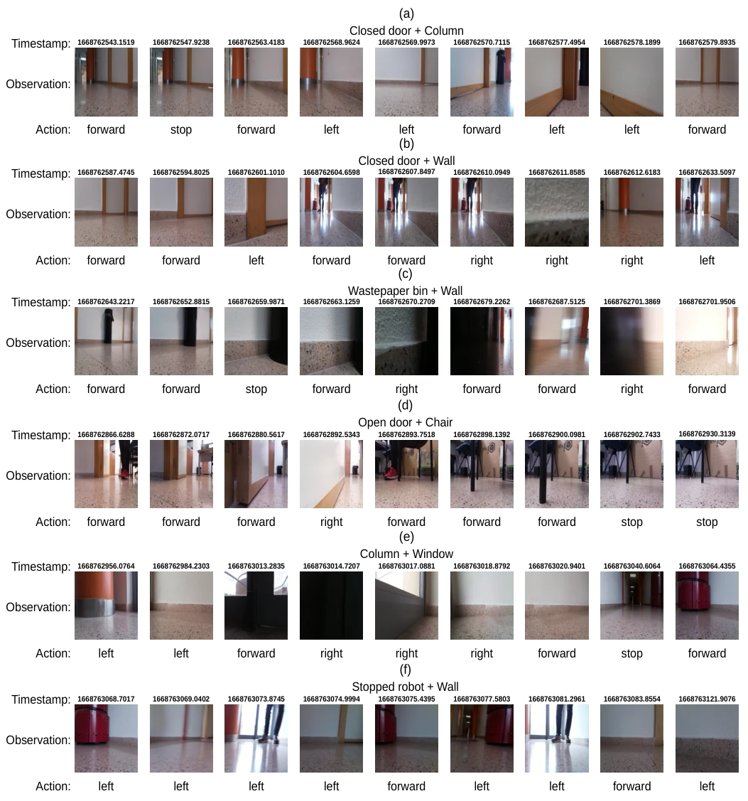

Low-cost robot visual navigation is the "last mile" of embodied intelligence, but the gap from simulation to reality (Reality Gap) remains difficult to bridge. This paper proposes a dual variational autoencoder framework, attempting to bridge the gap using hybrid transfer learning. The 91% indoor navigation classification success rate is indeed impressive, and it emphasizes efficiency on embedded devices such as Raspberry Pi, which is very pragmatic. However, the 45,000 simulation data volume is not small; the so-called "efficiency" is more relative to pure real data training. Methodologically, freezing the decoder and fine-tuning the encoder is classic, but whether the pseudo-data generated by latent space perturbation truly preserves semantic consistency is debatable. Furthermore, experiments focus mainly on static corridor navigation; robustness in dynamic environments is not detailed. Overall, this is a work solidly oriented towards engineering implementation but with somewhat conservative theoretical innovation, suitable for resource-constrained scenarios, but do not expect it to solve complex dynamic problems.
In embodied intelligence, vision-based autonomous navigation faces huge differences between simulation and reality. Direct simulation training (Sim-only) often fails in generalization [12], while pure real data training (Real-only) is costly and data is scarce [11]. Among existing methods, Domain Randomization (DR) can improve robustness [18], but it is difficult to completely eliminate the reality gap; Domain Adaptation (DA) utilizes real data [19], but often relies on large amounts of paired data or GAN instability. Azzam et al. [20] attempted zero-shot transfer, but relied on high-fidelity dynamic models, which are costly. Truong et al. [10] proposed low-fidelity simulation, but limited action space expressiveness. This paper aims to solve how, under low-resource platforms, to use a small amount of real data (4,556 images) combined with a large amount of simulation data (45,225 images) to achieve efficient, low-cost Sim-to-Real transfer, filling the gap in existing methods between data efficiency and deployment costs.
The core architecture is a dual convolutional variational autoencoder (VAE), the key is that two encoders (GS and GR) share one decoder. The overall pipeline is divided into two stages: pre-training and adaptation. In the first stage, 45,000 simulation images are used to train GS, using a domain randomization strategy to let the decoder learn a rich world generation model, ensuring the generalization of feature extraction. In the second stage, decoder parameters are frozen, only the GR encoder is fine-tuned, enabling it to encode real images into a latent space aligned with simulation data. To solve the problem of real data scarcity, the authors designed a dual augmentation strategy: first, image space transformations, such as random cropping, brightness and contrast adjustment; second, latent space operations, training a temporary VAE to generate new latent vectors and decode them into pseudo-real images. Finally, the extracted 32-dimensional latent vector is input into a lightweight MLP for classification decision. The innovation of this method lies in achieving domain alignment without paired data, effectively expanding the training set through latent space perturbation, while keeping the model compact, suitable for embedded deployment.
Experiments compared three types of models: pure real training, pure simulation training, and the hybrid method of this paper. The dataset contains 45,225 simulation images and 4,556 real images, the test set is unseen real data. Metrics are image classification accuracy and real robot deployment success rate. Results show that the hybrid method achieved an average success rate close to 91% on the real test set, significantly better than pure simulation (caused by Reality Gap) and pure real (insufficient data) baselines. t-SNE visualization shows good alignment of latent space distribution. Furthermore, real-time exploration verification without maps and collision avoidance was conducted on the Makeblock mBot robot, proving the feasibility of the model on low-compute platforms such as Jetson Nano. Ablation studies indicate that data augmentation is crucial for improving generalization.
其他图片Other Figures

Figure 1: The simulated indoor environment used for synthetic data acquisition. This is a high-fidelity representation of a specific corridor located in the Department of Computer Science and Artificial Intelligence at the University of Alicante. (a) View of the low-cost robot from the corridor’s entrance. (b) View of the low-cost from the corridor’s end.

Figure 2: Layer structure of our variational autoencoders. Each model comprises a convolutional encoder that compresses a 64x64 RGB input image into a 32-dimensional latent vector via variational inference, and a convolutional decoder that reconstructs the image from this latent representation.

Figure 4: Reconstructions generated by the decoder of our three convolutional variational autoencoders from input real image data. (a) Test images reconstructed using the real-only autoencoder trained for Experiment (1). (b) Test images reconstructed through the sim-only autoencoder trained in Experiment (2). (c) Test images reconstructed using our proposed pseudo-synthetic autoencoder trained and fine-tuned for Experiment (3).

Figure 6: Predictions and reconstructions obtained from labeled real images using our proposed pseudo-synthetic model trained in Experiment (3). These tests focused on reactive collision-free exploration tasks in the real world, involving reconstruction of input images and their classification into three categories: forward, turn, and stop. (a) Test image data representing scenarios requiring forward actions. (b) Test image data corresponding to situations requiring turn commands. (c) Test image data representing circumstances requiring stop actions.

Figure 7: Two-dimensional t-SNE visualization of the latent spaces generated from the non-augmented real-world (CV) test set. (a) Latent space from the real-only autoencoder. (b) Latent space from the sim-only autoencoder. (c) Latent space from the proposed pseudo-synthetic autoencoder.

Figure 8: Two-dimensional t-SNE visualization of the latent spaces generated from the realistically transformed (T1) test set. (a) Latent space from the real-only autoencoder. (b) Latent space from the sim-only autoencoder. (c) Latent space from the proposed pseudo-synthetic autoencoder.

Figure 9: Two-dimensional t-SNE visualization of the latent spaces generated from the realistically transformed (T2) test set. (a) Latent space from the real-only autoencoder. (b) Latent space from the sim-only autoencoder. (c) Latent space from the proposed pseudo-synthetic autoencoder.

Figure 10: Low-cost physical robot used for real-world deployment. The platform is a customized Makeblock mBot Ranger equipped with a single forward-facing monocular RGB camera module, which pro- vides all perceptual information for the navigation task.

Figure 11: Real-time evaluation of the proposed image classification policy on a low-cost physical robot. The green line depicts the path taken by the differential-drive agent during an autonomous, map-less exploration task in our indoor corridor, located in the Department of Computer Science and Artificial Intelligence at the University of Alicante. The trajectory demonstrates the robot’s ability to robustly navigate and avoid distinct obstacles, analyzed at six different checkpoints. (a) A closed door followed by a column. (b) A closed door placed in a side wall. (c) A wastepaper bin located in front of a wall. (d) An open door and a chair corresponding to an office. (e) A column placed beside a window. (f) A robot stopped on a wall.

Figure 12: Detailed analysis of the robot’s reactive behavior at six different checkpoints. These examples illustrate successful collision avoidance with challenging combinations of obstacles with diverse shapes and textures under varying illumination conditions. (a) A closed door followed by a column. (b) A closed door placed in a side wall. (c) A wastepaper bin located in front of a wall. (d) An open door and a chair corresponding to an office. (e) A column placed beside a window. (f) A robot stopped on a wall.